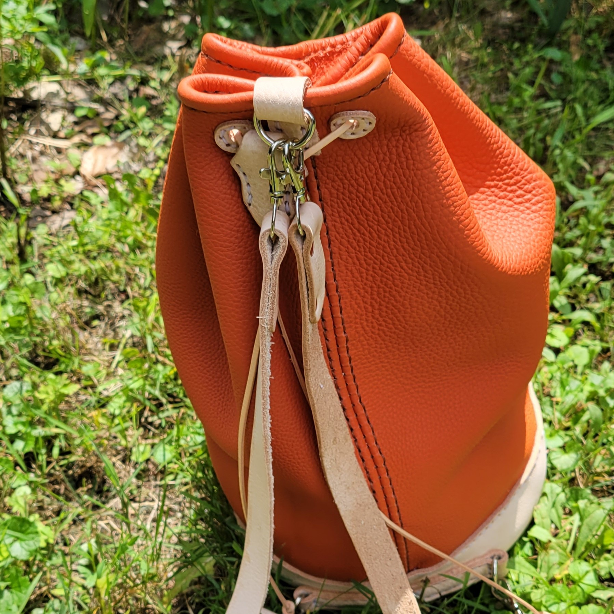

This is an orange bag I made for my mom. It features shoulder straps and a drawstring closure. The pattern is from TonySeePatterns on Etsy and made some minor modifications like removing the handle.
My favorite part of the bag is the orange Clemence leather. Clemence is a type of leather coming from young bulls, it is very supple and features a pebbled texture. I was able to get it for an amazing price as the piece I purchased came with some natural imperfections which I incorporated into the look of the bag.